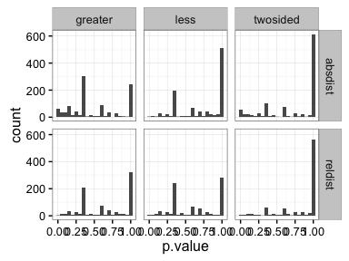

Interval statistics
Jay Hesselberth
November 20 2016
valr can be used to explore relationships between sets of intervals. Here we explore the relationship between transcription start sites and repetitive elements in the human genome.
library(valr)
library(dplyr)
library(ggplot2)
library(tidyr)
library(broom)
# load repeats and genes. Data in the valr package is restricted to chr22; the entire
# files can be downloaded from UCSC.
rpts <- read_bed(valr_example('hg19.rmsk.chr22.bed.gz'), n_fields = 6)
gens <- read_bed(valr_example('hg19.refGene.chr22.bed.gz'), n_fields = 12)
# load chrom sizes
chrs <- read_genome(valr_example('hg19.chrom.sizes.gz'))
# create 1bp intervals representing transcription start sites
tss <- mutate(gens,
.start = ifelse(strand == '+', start, end),
.end = .start + 1) %>%
select(chrom, start = .start, end = .end, name)
tss
#> # A tibble: 1,267 × 4
#> chrom start end name
#> <chr> <int> <dbl> <chr>
#> 1 chr22 16193009 16193010 NR_122113
#> 2 chr22 16157078 16157079 NR_133911
#> 3 chr22 16162065 16162066 NR_073459
#> 4 chr22 16162065 16162066 NR_073460
#> 5 chr22 16231289 16231290 NR_132385
#> 6 chr22 16287937 16287938 NM_001136213
#> 7 chr22 16274608 16274609 NR_046571
#> 8 chr22 16449804 16449805 NM_001005239
#> 9 chr22 17073700 17073701 NM_014406
#> 10 chr22 17082800 17082801 NR_001591
#> # ... with 1,257 more rowsFirst we define a function that takes x and y intervals and computes distance statistics (using bed_reldist() and bed_absdist()) for specified groups.
gen_stats <- function(x, y, genome, grp, type = NA) {
group_by_(x, .dots = grp) %>%
do(reldist = bed_reldist(., y, detail = TRUE) %>%
select(.value = .reldist),
absdist = bed_absdist(., y, genome) %>%
select(.value = .absdist_scaled)
) %>%
gather_('stat', 'value', setdiff(names(.), list(grp))) %>%
mutate(type = type)
} obs_stats <- gen_stats(rpts, tss, chrs, 'name', 'obs')
shfs <- bed_shuffle(rpts, chrs, within = TRUE)
shf_stats <- gen_stats(shfs, tss, chrs, 'name', 'shuf')
res <- bind_rows(obs_stats, shf_stats) %>%
unnest(value) %>%
group_by(name, stat, type) %>%
mutate(.id = row_number()) %>%
spread(type, .value) %>%
na.omit()
res
#> Source: local data frame [16,783 x 5]
#> Groups: name, stat [1,917]
#>
#> name stat .id obs shuf
#> <chr> <chr> <int> <dbl> <dbl>
#> 1 (A)n absdist 1 126.4610794 398.3905
#> 2 (A)n absdist 2 5.5929738 390.5459
#> 3 (A)n absdist 3 0.7715170 390.1060
#> 4 (A)n absdist 4 0.2205569 338.5905
#> 5 (A)n absdist 5 1.0203258 325.9782
#> 6 (A)n absdist 6 0.5561215 296.1639
#> 7 (A)n absdist 7 0.3747072 234.3513
#> 8 (A)n absdist 8 0.5429340 186.5005
#> 9 (A)n absdist 9 0.3323295 155.8682
#> 10 (A)n absdist 10 3.3093910 126.6239
#> # ... with 16,773 more rowsNow that the data are formatted, we can use ks.test() to determine whether there are significant differences between the observed and shuffled data for each group.
pvals <- res %>% do(twosided = broom::tidy(ks.test(.$obs, .$shuf)),
less = broom::tidy(ks.test(.$obs, .$shuf, alternative = 'less')),
greater = broom::tidy(ks.test(.$obs, .$shuf, alternative = 'greater'))) %>%
gather(alt, type, -name, -stat) %>%
unnest(type) %>%
select(name:p.value) %>%
arrange(p.value)
ggplot(pvals, aes(p.value)) +
geom_histogram(binwidth = 0.05) +
facet_grid(stat ~ alt) + theme_bw()
We can also assess false discovery rates (q.values) using p.adjust().
pvals <- group_by(pvals, stat, alt) %>%
mutate(q.value = p.adjust(p.value)) %>%
ungroup() %>%
arrange(q.value)Finally we can visualize these results using stat_ecdf().
res_fold <- res %>%
gather(type, value, -name, -stat, -.id)
signif <- head(pvals, 25)
res_signif <- signif %>% left_join(res_fold, by = c('name','stat'))
ggplot(res_signif, aes(x = value, color = type)) +
stat_ecdf() +
facet_wrap(name ~ stat) + theme_classic() + scale_x_log10()
bed_projection() is an additional statistical approach to assess the relationship between two intervals, based on the binomial distribution. Here, we’ll investigate the distribution of repetitive elements within the promoters coding or non-coding genes.
First we’ll extract 5kb regions upstream of the transcription start sites to represent the promoter regions for coding and non-coding genes.
# Using the same data as before
gens
#> # A tibble: 1,267 × 12
#> chrom start end name score strand cds_start cds_end
#> <chr> <int> <int> <chr> <chr> <chr> <int> <int>
#> 1 chr22 16150528 16193009 NR_122113 0 - 16193009 16193009
#> 2 chr22 16157078 16172265 NR_133911 0 + 16172265 16172265
#> 3 chr22 16162065 16172265 NR_073459 0 + 16172265 16172265
#> 4 chr22 16162065 16172265 NR_073460 0 + 16172265 16172265
#> 5 chr22 16199673 16231289 NR_132385 0 - 16231289 16231289
#> 6 chr22 16256331 16287937 NM_001136213 0 - 16258185 16287885
#> 7 chr22 16274608 16277577 NR_046571 0 + 16277577 16277577
#> 8 chr22 16448823 16449804 NM_001005239 0 - 16448823 16449804
#> 9 chr22 17071647 17073700 NM_014406 0 - 17071766 17073440
#> 10 chr22 17082800 17129720 NR_001591 0 + 17129720 17129720
#> # ... with 1,257 more rows, and 4 more variables: item_rgb <chr>,
#> # exon_count <int>, exon_sizes <chr>, exon_starts <chr>
rpts
#> # A tibble: 10,000 × 6
#> chrom start end name score strand
#> <chr> <int> <int> <chr> <chr> <chr>
#> 1 chr22 10522608 10522644 (AATA)n 39 +
#> 2 chr22 10529446 10529561 AluJo 771 +
#> 3 chr22 10534866 10534924 L1MD 356 -
#> 4 chr22 10536350 10536483 L1MEd 362 -
#> 5 chr22 10536811 10537128 AluYb8 3025 +
#> 6 chr22 10543083 10543417 Tigger3a 1540 +
#> 7 chr22 10549961 10550092 MSTB1 782 -
#> 8 chr22 10554305 10554514 LTR29 835 -
#> 9 chr22 10562009 10562402 L1MCa 858 -
#> 10 chr22 10563539 10563681 L1M5 325 -
#> # ... with 9,990 more rows
# create intervals 5kb upstream of tss representing promoters
promoters <- mutate(gens,
.start = ifelse(strand == '+', start - 5000, end - 1),
.end = ifelse(strand == '+', start + 1, end + 5000),
name = ifelse(grepl("NR_", name), "non-coding", "coding")) %>%
select(chrom, start = .start, end = .end, name, score, strand)
# select coding and non-coding promoters
nc_promoters <- filter(promoters, name == "non-coding")
coding_promoters <- filter(promoters, name == "coding")
nc_promoters
#> # A tibble: 294 × 6
#> chrom start end name score strand
#> <chr> <dbl> <dbl> <chr> <chr> <chr>
#> 1 chr22 16193008 16198009 non-coding 0 -
#> 2 chr22 16152078 16157079 non-coding 0 +
#> 3 chr22 16157065 16162066 non-coding 0 +
#> 4 chr22 16157065 16162066 non-coding 0 +
#> 5 chr22 16231288 16236289 non-coding 0 -
#> 6 chr22 16269608 16274609 non-coding 0 +
#> 7 chr22 17077800 17082801 non-coding 0 +
#> 8 chr22 17156429 17161430 non-coding 0 -
#> 9 chr22 17229327 17234328 non-coding 0 -
#> 10 chr22 17303363 17308364 non-coding 0 +
#> # ... with 284 more rows
coding_promoters
#> # A tibble: 973 × 6
#> chrom start end name score strand
#> <chr> <dbl> <dbl> <chr> <chr> <chr>
#> 1 chr22 16287936 16292937 coding 0 -
#> 2 chr22 16449803 16454804 coding 0 -
#> 3 chr22 17073699 17078700 coding 0 -
#> 4 chr22 17302588 17307589 coding 0 -
#> 5 chr22 17302588 17307589 coding 0 -
#> 6 chr22 17489111 17494112 coding 0 -
#> 7 chr22 17560848 17565849 coding 0 +
#> 8 chr22 17560848 17565849 coding 0 +
#> 9 chr22 17602256 17607257 coding 0 -
#> 10 chr22 17602212 17607213 coding 0 -
#> # ... with 963 more rowsNext we’ll apply the bed_projection() test for each repeat class for both coding and non-coding regions.
# function to apply bed_projection to groups
gen_stats <- function(x, y, genome, grp, type = NA) {
group_by_(x, .dots = grp) %>%
do(repeat_counts = nrow(.),
projection = bed_projection(., y, genome)
) %>%
mutate(type = type)
}
pvals_nc <- gen_stats(rpts, nc_promoters, chrs, "name", "non_coding")
pvals_cd <- gen_stats(rpts, coding_promoters, chrs, "name", "coding")
pvals <- bind_rows(pvals_nc, pvals_cd) %>%
unnest() %>%
select(-chrom)
#filter for repeat classes with at least 10 intervals
pvals <- filter(pvals,
repeat_counts > 10,
obs_exp_ratio != 0)
# adjust pvalues
pvals <- pvals %>%
mutate(q.value = p.adjust(p.value))
pvals
#> # A tibble: 179 × 7
#> name type repeat_counts p.value obs_exp_ratio lower_tail
#> <chr> <chr> <int> <dbl> <dbl> <chr>
#> 1 (A)n non_coding 28 0.003531508 4.7141679 FALSE
#> 2 (AT)n non_coding 48 0.298021071 0.9166438 FALSE
#> 3 (CA)n non_coding 31 0.156181108 1.4193194 FALSE
#> 4 (GT)n non_coding 42 0.247323981 1.0475929 FALSE
#> 5 (T)n non_coding 61 0.404997861 0.7212935 FALSE
#> 6 (TG)n non_coding 40 0.062261083 2.1999450 FALSE
#> 7 A-rich non_coding 54 0.348149650 0.8147945 FALSE
#> 8 Alu non_coding 15 0.044577839 2.9332600 FALSE
#> 9 AluJb non_coding 271 0.022516393 1.7859332 FALSE
#> 10 AluJo non_coding 208 0.021590030 1.9037986 FALSE
#> # ... with 169 more rows, and 1 more variables: q.value <dbl>The projection test is a two-tailed statistical test. Significant p.values indicate either enrichment or depletion of query intervals in the reference interval sets. lower_tail = TRUE indicates that the query intervals are depleted, whereas lower_tail = FALSE indicates that the query intervals are enriched.
# show top 5 most significant repeats
sig <- pvals %>%
arrange(q.value) %>%
group_by(type) %>%
top_n(-5, q.value) %>%
arrange(type)
knitr::kable(sig,
caption = "The most significant repeats overlapping coding and non-coding gene promoters")| name | type | repeat_counts | p.value | obs_exp_ratio | lower_tail | q.value |
|---|---|---|---|---|---|---|
| AluSx1 | coding | 364 | 0.0000114 | 2.105784 | FALSE | 0.0020433 |
| AluSx3 | coding | 95 | 0.0001425 | 2.913617 | FALSE | 0.0252231 |
| AluJb | coding | 271 | 0.0002226 | 2.042757 | FALSE | 0.0385082 |
| Charlie4z | coding | 11 | 0.0012298 | 5.806859 | FALSE | 0.2053719 |
| AluSz | coding | 259 | 0.0013212 | 1.890779 | FALSE | 0.2193255 |
| MER3 | non_coding | 27 | 0.0000270 | 8.147944 | FALSE | 0.0048130 |
| L1MC4a | non_coding | 23 | 0.0001449 | 7.651983 | FALSE | 0.0254988 |
| L1ME1 | non_coding | 38 | 0.0002036 | 5.789329 | FALSE | 0.0356315 |
| G-rich | non_coding | 54 | 0.0002174 | 4.888767 | FALSE | 0.0378348 |
| L1MC5 | non_coding | 29 | 0.0004565 | 6.068814 | FALSE | 0.0785198 |